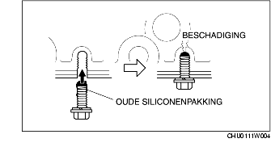

CARTERPAN VERWIJDEREN/PLAATSEN [ZJ, Z6]
B3E011110040W01
-
Waarschuwing
-
• Verwijder en plaats alle onderdelen als de motor koud is. Anders kunt u ernstige brandwonden of ander letsel oplopen.
-
• Het is gevaarlijk een auto op te krikken en deze vervolgens niet op bokken te zetten. Hij kan wegglijden of vallen, wat tot zeer ernstig letsel kan leiden. Werk nooit aan of onder een opgekrikte auto die niet op bokken staat.
-
• Voortdurende blootstelling aan gebruikte motorolie heeft bij laboratoriummuizen huidkanker tot gevolg gehad. Bescherm uw huid door deze direct na de werkzaamheden met water en zeep te wassen.
1. Verwijder de accukap. (Zie VERWIJDEREN/PLAATSEN ACCU [ZJ, Z6].)
2. Neem de minkabel van de accu los.
3. Verwijder het onderpaneel.
4. Tap de motorolie af. (Zie VERVERSEN MOTOROLIE [ZJ, Z6].)
5. Verwijder de onderdelen in de aangegeven volgorde, zie de tabel.
.
|
1
|
Carterpan
|
|
2
|
Oliezeef
|
|
3
|
O-ring
|
6. Plaats de onderdelen in omgekeerde volgorde.
7. Vul motorolie bij. (Zie VERVERSEN MOTOROLIE [ZJ, Z6].)
8. Start de motor en controleer of er olielekkage is op de plaatsen waar onderhoud is uitgevoerd.
-
• Als er olielekkage is, zoek dan de oorzaak en repareer of vervang het desbetreffende onderdeel.
9. Controleer het oliepeil. (Zie CONTROLE MOTOROLIEPEIL [ZJ, Z6].)
10. Plaats de onderplaat.
Aanwijzing voor verwijderen - carterpan
1. Verwijder de carterpan met een pakkingsnijder.
Aanwijzing voor plaatsen - carterpan
-
Opmerking
-
• Breng rond de gehele omtrek siliconenpakking aan in een enkele, ononderbroken lijn.
-
• Plaats de carterpan binnen 5 minuten na het aanbrengen van de siliconenpakking.
-
• Het gebruik van bouten met pakkingresten kan scheurtjes veroorzaken in het huis.

1. Verwijder alle olie, vuil, pakking en andere verontreinigingen die nog op het huis en op de carterpan zijn achtergebleven.
2. Verwijder alle oude pakkingresten van de bevestigingsbouten als deze opnieuw worden gebruikt.
3. Breng siliconenpakking aan op de vlakken zoals aangegeven in de afbeelding.
-
Dikte
-
2,0—6,0 mm {0,08—0,24 in}
4. Draai de bouten in de aangegeven volgorde vast.
-
Aanhaalmoment
-
7,8—10,8 Nm {80-110 kgcm, 69,1-95,5 in·lbf}